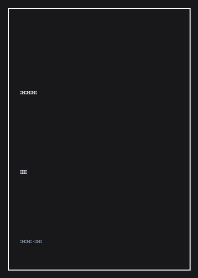

《世界平面设计史》

总体观点
《世界平面设计史》是中文世界最权威、最宏阔的现代视觉传达设计通史巨著。王受之教授以敏锐的历史洞察力与深厚的人文底蕴，将平面设计的演进彻底抽离出单纯的技术技巧层面，置于人类工业化大生产、政治意识形态激荡、哲学思潮更迭与大众消费文化崛起的宏大历史坐标系中予以全景审视。
全书从19世纪工业革命对传统手抄书与维多利亚折衷主义装饰的冲击切入，深刻描绘了约翰·拉斯金与威廉·莫里斯的工艺美术运动如何以复兴手工艺对抗机械丑陋；继而详尽剖析了新艺术运动的自然流线、立体主义与未来主义的速度感狂飙、俄国构成主义的红色政治宣传，以及包豪斯学校如何最终奠定了“形式追随功能”的现代主义设计基石。
在二战后的篇章中，本书深入剖析了瑞士国际主义平面风格如何以严谨的数学网格系统与客观中立排版征服全球跨国企业，以及随后后现代主义、波普艺术与数字化浪潮如何对理性秩序展开颠覆与反叛。这不仅是一本设计师的案头寻根必读书，更是一部借由视觉图像符号解码现代文明精神进阶的文化思想史诗。
核心观点
-
1. 工业异化与手工艺复兴：工艺美术运动的浪漫反抗
工业化初期批量制造的劣质产品引发了视觉美学的严重倒退。威廉·莫里斯发起工艺美术运动，试图通过回归中世纪匠人诚实手作挽救社会美育。
莫里斯创办的凯姆斯科特出版社（Kelmscott Press），使用自制手工纸、植物染料墨水与哥特字体排印《乔叟集》，展现了抗拒工业粗制滥造的极致匠心美学。 -
2. 包豪斯的理性格命：现代主义平面设计奠定功能法典
包豪斯斩断了古典装饰的繁复绳索，主张视觉形式必须绝对服务于信息传达功能。无衬线字体、非对称排版与留白艺术由此成为现代设计的普适准则。
赫伯特·拜耶（Herbert Bayer）在包豪斯时期设计的全小写“通用体（Universal Type）”，废黜了冗余的德文大写字母，将文字简化为纯粹几何圆弧与直线构成的最高效信息符号。 -
3. 苏黎世与巴塞尔的理性登顶：网格系统与客观中立排版
战后瑞士国际主义风格将视觉传达推向极致理性。严密的数学网格不仅规范了页面空间秩序，更消解了设计师的个人主观偏见，确保信息传达的客观纯粹。
约瑟夫·米勒-布罗克曼设计的音乐会海报，完全依托严格的模块化网格排列文字与几何色块，无需具象人物插图便营造出极度严谨与音乐节奏共鸣的视觉震撼。 -
4. 俄国构成主义的红色号角：平面设计作为强大的社会动员武器
十月革命后的苏联构成主义艺术家将设计视作改造世界的实际武器。极具冲击力的对角线构图、红黑对比与蒙太奇摄影彻底重构了大众视觉认知。
埃尔·利西茨基创作的宣传招贴《以红色楔子打击白军》，用一个锐利直插的红色三角形刺破白色圆形，将抽象几何图形升华为了惊天动地的政治战斗象征。 -
5. 后现代主义的反叛与数码消解：从理性秩序走向多元狂欢
20世纪下半叶，面对冷漠枯燥的国际主义统一模版，朋克、孟菲斯集团与电脑软件实验掀起了一场打破网格、重拾混乱与情感温度的解构狂澜。
大卫·卡森（David Carson）在《Ray Gun》杂志设计中故意重叠文字、撕裂字距、彻底弃用网格，以极具表现主义的“反可读性”精准契合了当时青年摇滚文化的愤怒与叛逆。
全书思维导图 · 知识脉络树
全书结构
-
第一章：平面设计的渊源与工业革命前夕
追溯人类文字书写、古埃及莎草纸、中世纪手抄泥金画卷以及谷登堡活字印刷术的发明对视觉传播范式的奠基。
剖析谷登堡四十二行圣经的排版规范如何兼顾手抄本美学与机械批量复制的一致性。 -
第二章：工艺美术运动与新艺术运动
讲述19世纪末欧美如何摆脱维多利亚风格的繁琐折衷，从自然植物曲线与日本浮世绘中汲取灵感展开有机设计探索。
详述慕夏（Alphonse Mucha）招贴画中曼妙蜿蜒的女性发丝流线与扁平装饰轮廓对全欧洲商业海报的颠覆。 -
第三章：现代艺术先锋派对视觉语言的重塑
呈现立体主义的拼贴、未来主义的声音诗歌、达达主义的荒诞拼贴与荷兰风格派的原色几何如何全方位注入平面构图。
分析马里内蒂的未来主义宣言如何打破传统横平竖直排版，利用倾斜扭曲的字模模拟战场隆隆炮火声。 -
第四章：包豪斯学校与构成主义的黄金时代
聚焦魏玛与德绍包豪斯的设计教学革命，揭示理性主义平面体系、摄影蒙太奇与现代无衬线字体的诞生细节。
回顾莫霍利-纳吉提出的“排印摄影（Typophoto）”概念，展示文字与纪实摄影如何实现无缝融合。 -
第五章：国际主义平面设计风格（瑞士风格）
剖析战后以瑞士为发源地的现代网格系统、Helvetica字体的全球风靡以及跨国企业视觉识别系统（CIS）的标准化确立。
详解联邦快递、IBM等企业形象识别手册中对标志比例、保护区与专用网格的苛刻数学规范。 -
第六章：后现代主义、波普浪潮与数码时代的平面新生
全景展现20世纪后半叶至今，面对数字化排版软件普及与网络媒体兴起，平面设计如何走向去中心化、跨界与沉浸体验。
探讨苹果电脑Macintosh与排版软件PageMaker的诞生如何一夜之间将印刷排字工人的特权下放给大众设计师。